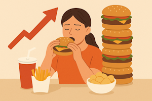

Здоровое питание
Питание в жизни человека
Как любое растение не в состоянии взрасти на неплодородной почве,
так и человек не может полноценно жить, если его диета состоит лишь из нескольких продуктов.
Пища обеспечивает человека не только белками, жирами и углеводами, но и другими питательными веществами,
без которых невозможно правильное функционирование организма и его рост.
От питания зависит работа всех органов, нервной и иммунной системы.
Накопительный эффект неправильного питания

О вредных привычках мы слышим часто.
В основном вредные привычки ассоциируются у людей с курением, употреблением алкоголя и зависимостями.
Также всем известно о том, что привычки имеют накопительный эффект:
Чем больше пьешь, тем быстрее придет в негодность печень,
а чем чаще куришь, тем будет хуже легким со временем.
Однако, вредные пищевые привычки очень редко ставят в один ряд с алкоголем или сигаретами,
хотя по той же логике накопительного эффекта, стоило бы, ведь люди едят три и даже более раз в день.
Поэтому, если человек постоянно употребляет вредные продукты в небезопасных количествах, он определенно наносит накопительный эффект своему здоровью.
Сигареты вредят легким.
Алкоголь вредит печени.
Неправильное питание может привести к проблемам с кожей, желудком, поджелудочной, почкам, кишечником, и даже с другими органами.
За год среднестатистический человек съедает 752 кг продуктов.
А за 70 лет жизни человек может употребить около 50 тонн.
Весьма очевидно, что при таких масштабах продукты, которые мы едим однозначно влияют на наше здоровье.
Основные проблемы питания: